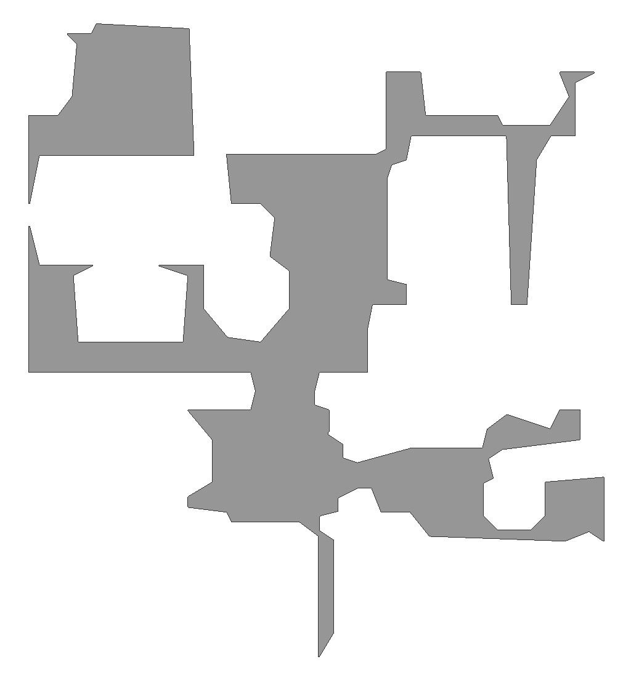
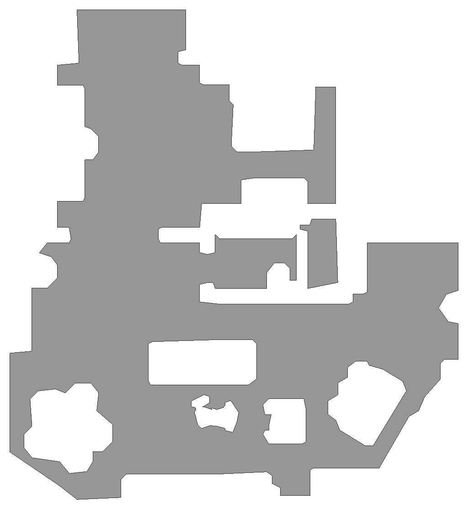
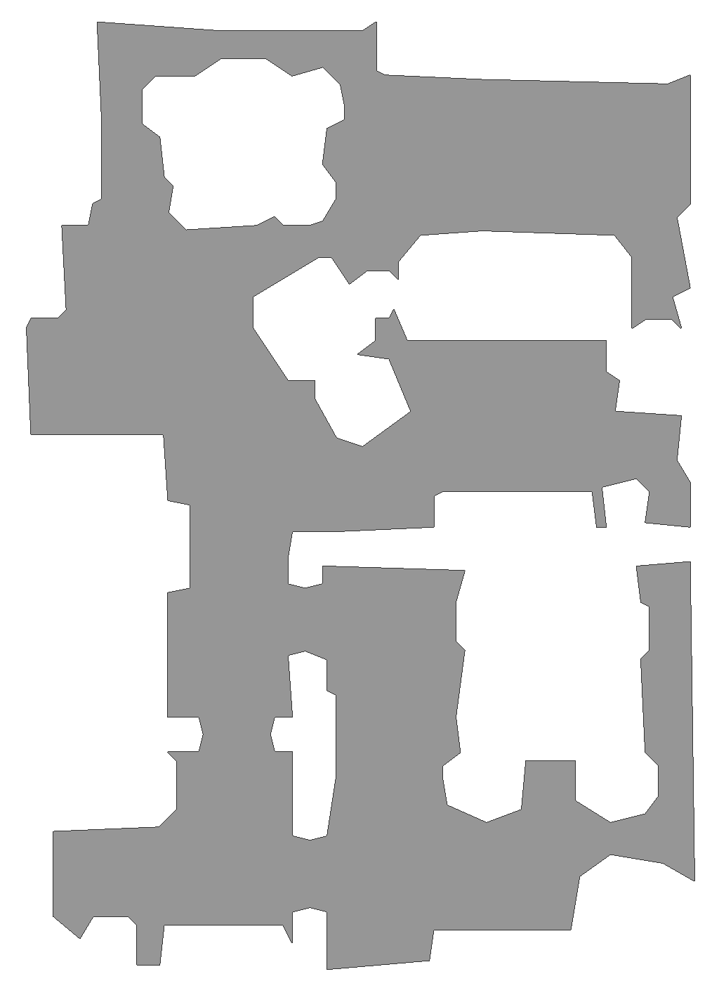
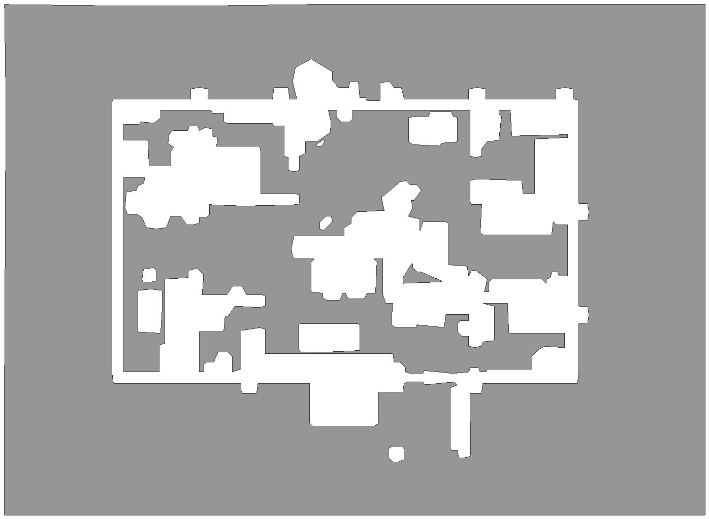
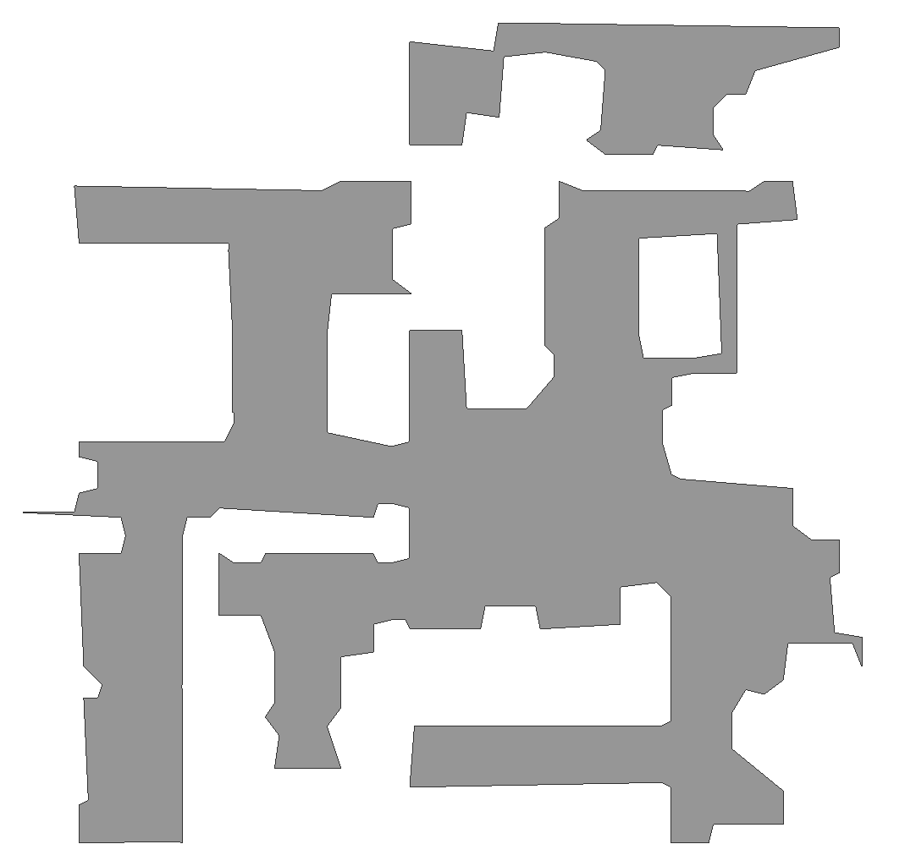
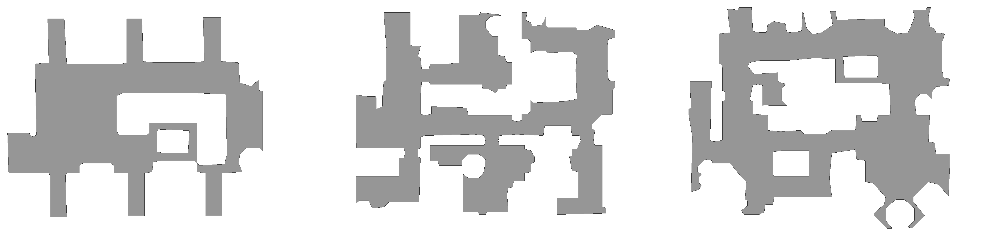
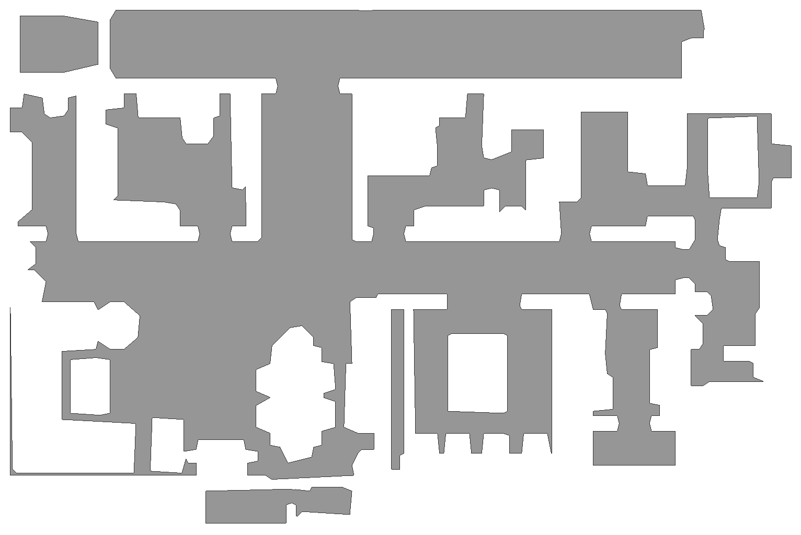
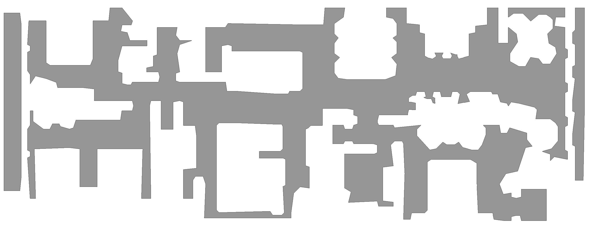
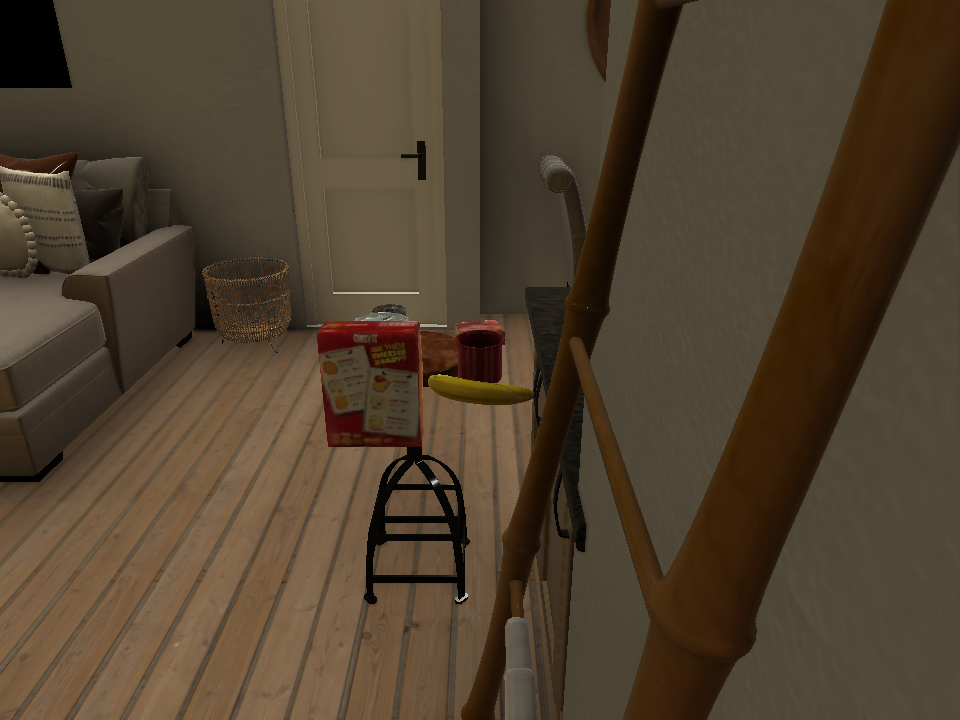

A deep, hands-on teaching reference for the Habitat 3.0 simulator, built bottom-up from its atomic pieces: scenes, objects, and affordances. Every example below was rendered headless on an 8×H200 cluster. Affordances are the key building blocks — they decide which multi-step interaction tasks our benchmark can express.
Habitat ships several 3D scene datasets, and the choice plus the render settings dominate realism. Our findings, with evidence from this repo:
| Dataset | Type | Realism for egocentric video |
|---|---|---|
| HSSD (used here) | Artist-authored 3D houses (168 scenes) | Best balance — clean watertight geometry, PBR materials, consistent lighting; no reconstruction noise. What Habitat 3.0 itself showcases. |
| HM3D / MP3D | Real-world 3D scans | Photo-real textures but noisy/holey geometry (jagged edges); MP3D is access-gated. |
| ReplicaCAD | Synthetic apartments + articulated furniture | Clean but few scenes; its openable fridge/cabinets/drawers power our articulation affordances. |
| habitat test scenes | Old reconstructions | Low quality (jagged walls) — avoid for final renders. |
Default settings looked flat and aliased. Enabling these closed most of the gap to the official Habitat 3.0 renders:
enable_hbao=True) — adds contact shadows / depth.HSSD provides 168 artist-designed full houses. We categorize them by size (room count), computed from each scene's semantic region annotations.
Size categories (by room count): Compact ≤8 (23 scenes) · Medium 9–15 · Large 16+ (145 scenes). Each example below shows a top-down floor plan (navmesh layout) and a room-visiting egocentric tour — the agent walks the geodesic path through every room.

top-down floor plan + egocentric room tour

4 rooms walked

open-plan

multi-room tour

8 rooms walked

9 rooms walked


12 rooms walked
Objects can be instantiated anywhere in a scene (on any surface/receptacle, or free-floating) via the rigid-object manager, with full 6-DoF pose and rigid/kinematic/dynamic physics.

cracker box, cans, banana, mug, gelatin box — each a separate rigid object with physics.
The same object API drives placement and manipulation (see Affordances).
Affordances are the actions available on the environment; they define the space of multi-step tasks the benchmark can build. Every clip below is a true first-person (egocentric) view from the humanoid's eyes, pitched down to watch its own SMPL-X hand interact with the object — you can see the whole grasping / opening / closing process, exactly as a wearable head camera would record it. Each loops a single successful execution.
the hand reaches down, closes on the object, and lifts it off the surface — object rises with the hand
carries the held object across and sets it down at a new spot, then releases
hand reaches the door, the door swings open revealing the interior
hand pulls the cabinet door; the compartment opens
prismatic joint — the drawer slides out toward the hand
the reverse — hand swings the door shut
hand pushes the cabinet door closed
drawer slides back in
HumanoidRearrangeController.calculate_reach_pose so the hand actually reaches the target; the object/joint is
coupled to the hand so the interaction is physically coherent. Camera = a sensor at the eyes, forward + pitched down ~35°,
2× supersampled with HBAO. Manipulation runs in HSSD; articulation uses ReplicaCAD's openable furniture (the only Habitat
furniture shipping with usable joints).| Category | Actions | Mechanism |
|---|---|---|
| Navigation | move_forward, turn_left/right, look_up/down, stop; continuous base velocity; oracle nav-to-coordinate/object | discrete + BaseVelAction + OracleNav |
| Grasp / release | pick up object, place object, drop | MagicGrasp/SuctionGrasp/GazeGrasp; humanoid hand reach |
| Articulation | open/close fridge, cabinet, drawer, door, dishwasher, oven | articulated-object joint control |
| Arm manipulation | 7-DoF arm joint deltas, end-effector control, reach | ArmRelPos/ArmEEAction |
| Humanoid (user body) | walk, turn, reach-with-hand, pick, sit-to-stand poses (SMPL-X) | HumanoidRearrangeController, HumanoidJoint/PickAction |
| Surface / object | wipe / clean, push, sweep (custom-authored on contact) | scripted contact + state change |
| Symbolic (oracle) | nav(obj), pick(obj), place(obj,target), open(recep), close(recep) | PddlApplyAction over a PDDL plan |